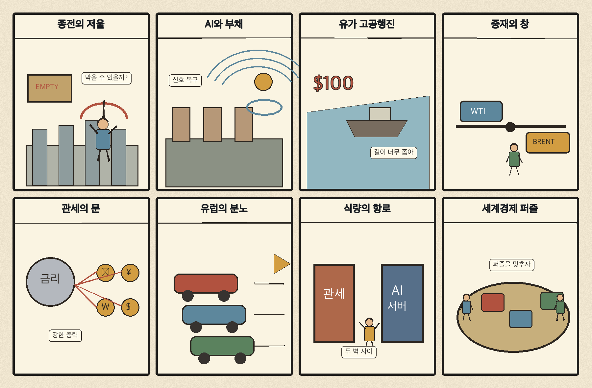
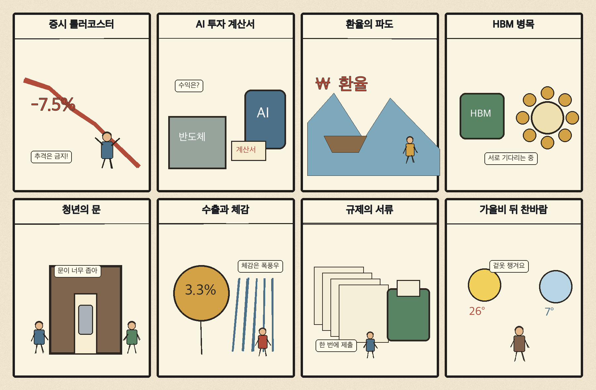

01
마이크로스트래티지 · 133.76→142.72달러 · +6.70%
내용요약 시가 대비 +6.70%로 조사 종목 중 상승 폭이 가장 컸습니다. 가상자산 연계주의 고변동 위험선호가 강했습니다.
예상여파 국내 가상자산 관련주의 심리를 자극할 수 있지만 기초자산 변동성과 괴리가 커 추격 위험이 큽니다.
MORNING_BRIEFING_20261021
작성 시각: 2026-10-21 06:34 KST · 직전 미국 정규장과 2026-10-21 KST 당일 공개 기사 기준
직전 미국 정규장인 10월 20일 뉴욕증시는 다우 +1.02%, S&P 500 +0.28%, 나스닥 -0.02%로 혼조 마감했습니다. 유가 하락과 기업 실적이 다우를 끌어올렸지만 인공지능 대형주는 숨고르기에 들어가 위험선호가 고르게 확산되지는 않았습니다. 전일 KOSPI가 -3.73% 급락한 한국 시장은 낙폭 과대 반등 가능성과 고변동 위험이 동시에 있어 시초가 추격보다 외국인 수급과 환율을 먼저 확인해야 합니다.
| 지수 | 종가 | 등락률 | 한국 증시 시사점 |
|---|---|---|---|
| 다우존스 | 52,495.88 | +1.02% | 경기민감 대형주 심리에 우호적 |
| S&P 500 | 7,712.57 | +0.28% | 기술주 선별 장세와 변동성 경계 |
| 나스닥 종합 | 26,424.82 | -0.02% | 기술주 선별 장세와 변동성 경계 |
유가 하락과 실적 호조가 경기민감 대형주를 지지했습니다.
전일 5,552.74로 급락했고 시가 대비로도 3.15% 내렸습니다.
인공지능 대형주는 숨고르기, 반도체는 종목별 차별화였습니다.
5개월 최고치 뒤 중재 기대에 하락해 비용 민감 업종의 변수가 됐습니다.
10월 20일 보고서는 급반등 뒤 과열·갭 위험과 필수 수급·컨센서스·유사 조건 표본 부족으로 공식 추천을 내지 않았습니다. 게시 당시 판단을 유지하며 사후 종목을 추가하지 않습니다.
| 시장 | 종가 | 등락률 | 기준 |
|---|---|---|---|
| KOSPI | 5,552.74 | -3.73% | 10월 20일 · 시가 대비 -3.15% |
| KOSDAQ | 781.97 | -3.33% | 10월 20일 · 시가 대비 -2.91% |
| 다우존스 | 52,495.88 | +1.02% | 미국 10월 20일 정규장 |
| S&P 500 | 7,712.57 | +0.28% | 미국 10월 20일 정규장 |
| 나스닥 종합 | 26,424.82 | -0.02% | 미국 10월 20일 정규장 |
마이크로스트래티지 +6.70%, 코인베이스 +2.88%로 위험선호가 유입됐습니다.
마벨 +3.43%, TSMC +2.11%, 마이크론 +1.35%로 선별 반등했습니다.
월마트 -2.18%, 넷플릭스 -1.65%로 소비 관련 종목이 약했습니다.
다이아몬드백 -1.64%, 엑슨모빌 -1.13%로 유가 하락을 반영했습니다.
내용요약 시가 대비 +6.70%로 조사 종목 중 상승 폭이 가장 컸습니다. 가상자산 연계주의 고변동 위험선호가 강했습니다.
예상여파 국내 가상자산 관련주의 심리를 자극할 수 있지만 기초자산 변동성과 괴리가 커 추격 위험이 큽니다.
내용요약 시가 대비 +3.43%로 인공지능 네트워크·반도체 인프라 기대가 반영됐습니다.
예상여파 국내 반도체 심리에는 우호적이나 미국 대형 인공지능주는 혼조여서 개별 수주 확인이 중요합니다.
내용요약 시가 대비 +3.21%로 서버 종목의 반등이 두드러졌습니다.
예상여파 데이터센터 서버·냉각 공급망 관심을 높일 수 있지만 높은 변동성과 실적 검증 위험이 남습니다.
내용요약 시가 대비 -2.18%로 조사 종목 중 낙폭이 컸습니다.
예상여파 소비 방어주 약세는 기업별 실적 눈높이 조정을 뜻할 수 있어 국내 유통주의 단순 연동은 피해야 합니다.
내용요약 시가 대비 -1.65%로 기술·미디어 종목 중 약세였습니다.
예상여파 플랫폼 종목의 성장 기대가 실적과 가입자 지표에 따라 차별화될 수 있음을 보여줍니다.
전일 KOSPI와 KOSDAQ은 각각 -3.73%, -3.33% 급락했고 시가 대비로도 -3.15%, -2.91% 내렸습니다. 미국 다우 반등과 유가 하락은 경기민감·운송 업종에 완충재지만 나스닥 정체와 인공지능 대형주 숨고르기는 국내 성장주의 무차별 반등을 지지하지 않습니다. 낙폭 과대만으로 진입하지 말고 외국인 현·선물 수급, 원·달러 환율과 반도체 대형주의 시가 회복 여부를 확인합니다.
오늘은 추천 없음 — 현금 관망
전일 KOSPI가 -3.73% 급락해 장전 변동성과 갭 위험이 높고, 전일까지의 외국인·기관 수급과 컨센서스 변화, 30건 이상 유사 조건 표본을 함께 확보해 종합점수 75점·상승확률 60%·예상 손익비 1.5를 모두 검증한 종목이 없습니다.
관심 연결종목 반도체 패키징·데이터센터 전력·유가 하락 수혜 업종은 뉴스 연결 관찰 대상일 뿐 매수 추천이 아닙니다. 장중 수급과 실제 공시를 확인하기 전 추격매수를 금지합니다.
급락 다음 날 현·선물 동반 매수 전환 여부를 확인합니다.
미국 반도체 선별 반등이 국내 대형주로 이어지는지 봅니다.
중재 기대가 이어지는지와 항공·화학·정유의 엇갈린 반응을 봅니다.
찬바람과 강풍, 목요일 서울 아침 4도 예보에 대비합니다.
핵심 요약: 인공지능 경쟁은 가속기 호환성, HBM 패키징 병목, 원전과 전력망, 제조 현장 적용으로 확장되고 있습니다. 오늘은 투자 규모보다 실제 호환성·가동률·전력 확보와 생산성 개선을 확인해야 합니다.
내용요약 인공지능과 데이터 분석을 전력 운영에 접목해 에너지 플랫폼으로 확장하려는 국내 산업 사례입니다.
예상여파 전력망 효율화가 실제 비용 절감과 안정성 개선으로 이어지면 데이터센터 전력 생태계의 투자 범위가 넓어질 수 있습니다.
내용요약 빅테크가 코드 변경을 최소화하면서 엔비디아용 작업을 자체 인공지능 칩으로 옮기는 호환 기술을 추진한다는 보도입니다.
예상여파 칩 선택권이 넓어지면 가속기 가격과 클라우드 비용 경쟁이 커지고 소프트웨어 호환성이 핵심 진입장벽이 됩니다.
내용요약 HBM 공급사는 늘지만 첨단 패키징 생산이 TSMC에 집중돼 공급망 병목 우려가 남는다는 보도입니다.
예상여파 메모리 증설만으로 병목이 풀리지 않을 수 있어 패키징 가동률과 고객 인증 일정이 반도체 실적의 중요 변수가 됩니다.
내용요약 미국 인디애나주에서 6기가와트 규모 원전 계획이 데이터센터 전력난 해법으로 주목받는다는 당일 보도입니다.
예상여파 대규모 원전·송전망 투자는 장기 전력계약과 기자재 수요를 키우지만 인허가와 공사기간 위험도 함께 봐야 합니다.
내용요약 경주시가 인공지능 팩토리 공모에 선정돼 자동차부품 제조 공정 혁신을 추진한다는 보도입니다.
예상여파 생성형 인공지능 기대가 제조 현장의 품질·생산성 개선으로 이어지는지 보여줄 실증 사례가 될 수 있습니다.
핵심 요약: 우크라이나 종전 압박, 후티의 독자 행보와 유가 변동, 세계 금융당국의 부채·인공지능 과열 경계가 동시에 커졌습니다. 외교 중재의 진전과 유럽 정치 불안이 에너지·금리·교역 위험의 방향을 가를 변수입니다.
내용요약 트럼프 미국 대통령이 러시아의 규모를 강조하며 젤렌스키 우크라이나 대통령에게 종전 합의를 재차 압박했다는 보도입니다.
예상여파 안보 보장과 영토 문제가 풀리지 않은 성급한 합의는 유럽 내부 갈등과 방산·에너지 시장 변동성을 키울 수 있습니다.
내용요약 세계 금융당국이 중국 위험보다 높은 부채와 인공지능 투자 과열을 더 큰 금융 불안 요인으로 본다는 보도입니다.
예상여파 고금리 장기화 속 인공지능 설비투자의 수익성 검증이 늦어지면 기술주와 신용시장에 동시 조정 압력이 생길 수 있습니다.
내용요약 후티가 이란의 대리세력 범주를 넘어 독자적 영향력을 키우며 중동 분쟁의 핵심 변수로 부상했다는 분석입니다.
예상여파 홍해 항로와 에너지 시설 위험이 지속되면 운임·보험료·유가의 위험 프리미엄이 쉽게 내려가지 않을 수 있습니다.
내용요약 국제유가가 5개월 최고치를 찍은 뒤 미국과 이란의 중재 가능성에 하락했다는 보도입니다.
예상여파 외교 진전 여부에 따라 항공·화학의 비용과 에너지주의 이익 전망이 크게 흔들리는 고변동 국면이 이어질 수 있습니다.
내용요약 프랑스 시위 격화와 정치 지형 변화 가능성이 유럽 정세의 새 변수로 떠올랐다는 외신 소개입니다.
예상여파 재정·노동 정책 불확실성이 커지면 유럽 소비와 투자 심리가 약해지고 유로화 변동성도 높아질 수 있습니다.

핵심 요약: 급락한 증시의 변동성 관리가 우선인 가운데 프로젝트파이낸싱 불균형, 서비스산업 규제, 수출 판로 확대가 경제의 상반된 흐름을 보여줍니다. 일상에서는 가을비 뒤 강풍과 급격한 기온 하락에 대비해야 합니다.
내용요약 최근 급락한 코스피의 바닥 시점과 연말 반등 가능성을 짚은 당일 시장 전략 보도입니다.
예상여파 방향성 예측보다 변동성 관리가 우선이며 외국인 수급과 실적 전망이 확인되기 전 지수 반등 추격은 경계해야 합니다.
내용요약 프로젝트파이낸싱 규제 유예가 부동산 금융 불균형을 확대할 수 있다는 우려를 다룬 보도입니다.
예상여파 부실 정리가 지연되면 금융사의 충당금과 건설업 자금조달 부담이 장기화될 수 있습니다.
내용요약 15년째 지연된 서비스산업발전기본법을 둘러싸고 규제 비용과 국회 논의 필요성이 제기됐다는 보도입니다.
예상여파 서비스업 생산성과 신사업 진입 여건을 개선할 수 있지만 업종별 이해조정과 소비자 보호 설계가 중요합니다.
내용요약 글로벌 바이어 530곳이 방한해 2억달러 규모 수출계약을 목표로 상담에 나선다는 보도입니다.
예상여파 계약이 실제 선적과 매출로 이어지면 중소 수출기업의 판로 다변화와 내수 둔화 보완에 도움이 될 수 있습니다.
내용요약 전국 곳곳의 가을비가 그친 뒤 찬 바람이 불고 서울 기온이 크게 떨어진다는 예보입니다.
예상여파 출근길 강풍·미끄럼에 주의하고 목요일 아침 급격한 기온 하락에 대비해 겉옷과 건강관리가 필요합니다.
